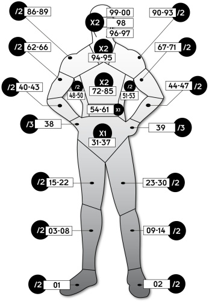

LA GESTION DES BLESSURES

Une balle dans la jambe... 15 points de dégâts... t'avais mis ton smoking du dimanche ? Celui qui est très beau mais pas blindé ? Bon, jet de résistance contre la mort... raté ? Bin, tchao, mec.
Voici quelques règles concernant les blessures, et les localisations. J'ai essayé de trouver un compromis entre la simplicité (qui est l'avantage du système de Cyberpunk 2020) et le réalisme (qui lui fait défaut). Cette vision des règles concernant les blessures permettra, je l'espère, à vos personnages de ne pas mourir bêtement d'une blessure à la jambe, et de d'accéder à une mort méritée lors d'une collision avec une balle de 10 mm percutant la poitrine, le cou ou à fortiori la tête. Elle vous permettra également de cibler plus précisément l'endroit ou un projectile ou un coup touche, pour savoir si votre personnage est protégé à cet endroit ou non (notamment si celui-ci porte optishields, bottes, cybermain...).
- Les Localisations s'obtiennent en tirant 1D100, et en consultant la silhouette "cible".
- Les cases B, C, I décrivent l'état d'un membre ou d'une partie d'un membre :
- B : le membre est légèrement Blessé.
- C : le membre est Cassé, donc inutilisable pour une longue période.
- I : le membre est temporairement "hors-service", suite à plusieurs blessures sans gravité, ou carrément mis en bouillie suite à un coup particulièrement violent. De toute, façon le résultat est le même : il est Inutilisable.
- La colonne "Mal." décrit le malus à affecter à chaque action physique du personnage en fonction de son état de santé. Une croix signifie qu'à part ramper par terre en geignant, un personnage dans un état mortel ne peut guère réaliser une action. Un jet de Résistance à la douleur ou Endurance difficile peut néanmoins l'autoriser à effectuer une action héroïque à -4.
- Le seuil de Fracture : décrit le nombre minimum de points de dégâts que doit encaisser un membre en une fois pour être brisé. Sa valeur est égale à (8 + Modificateur de Constitution).
- Le seuil d'Amputation : décrit le nombre minimum de points de dégâts que doit encaisser un membre pour être tranché ou mis en bouillie de manière définitive. Cette valeur détermine également un seuil au delà duquel le personnage recevant une blessure doit réussir un jet de Résistance contre la mort pour ne pas faire un arrêt cardiaque. Il est égal à (10 + Modificateur de Constitution).
- Bonus aux dégâts : voir le chapitre suivant.
- Modificateur de CON : voir le chapitre suivant.
JE REÇOIS DES DÉGÂTS
Quelle délicate attention ! Il ne fallait pas !
Voici la procédure pour comptabiliser les dégâts. Apprenez par coeur ces lignes et tout vous semblera simple.
- Tirer la localisation (1D100).
- Si le seuil d'Amputation est égalé ou dépassé (hors tout modificateur, et quelle que soit la localisation), faire un jet de Résistance contre la mort (jet inférieur ou égal à la CON). En cas d'échec, et même si le personnage n'est pas dans un état de blessure mortel, c'est l'arrêt cardiaque par le fait du choc et de la douleur.
Cocher la case correspondante (I) s'il s'agit d'un membre, ou consulter la liste "Les coups durs là ou ça fait mal" dans un autre cas (torse, cou ou tête). C'est ici qu'intervient la toute puissance du MJ qui peut s'il le veut infliger une hémorragie au perso, ou le rendre trétraplégique s'il a des raisons de lui en vouloir.
- Si le seuil de Fracture est atteint (hors tout modificateur) c'est la fracture, avec les conséquences que l'on imagine. Cocher la case "C" du membre correspondant. Dans le cas d'une blessure au torse ou au crâne, jeter un coup d'oeil à la section "Les coups durs là où ça fait mal".
- Plusieurs blessures légères à un même membre peuvent le rendre momentanément inutilisable. A vous de juger quand ce seuil est atteint et cocher alors la case adéquate sur la silhouette de votre personnage.
- Appliquer le multiplicateur en fonction de la localisation touchée (de x 2 à / 3 selon que l'on touche la tête ou la main) aux dégâts. Puis retirez du résultat le MC. Malaxez bien et retirer ces dégâts à l'état général.
- Ensuite, faire comme à l'accoutumée les jets d'Evanouissement, de Mort... la routine quoi.
FIORITURES POUR EMBÊTER LES JOUEURS
LE COMA :
Le coma peut survenir dans certains cas :
- Jet d'Evanouissement complètement raté (jet de 10 suivi de 8 ou plus). Dans le cas d'une blessure légère, il sera néanmoins de courte durée.
- Blessure à la tête ou au torse entraînant un état général critique ou mortel.
- Etat de santé se dégradant suite à un défaut de soins, jusqu'à devenir mortel.
A vous de gérer les cas où le coma se présente et combien de temps il doit durer. A noter que la compétence Endurance peut aider à échapper au coma, ou à en sortir.
AGGRAVATION DES BLESSURES :
- Blessures légères ou sérieuses : faire un jet de Premiers soins ou Technique médicale pour empêcher l'aggravation et permettre la récupération normale. Il s'agit alors de panser la plaie, arrêter l'hémorragie, recoudre les chairs, extraire le projectile et désinfecter au mieux. Une blessure très légère sera relativement simple à soigner (10) alors qu'une fracture ou une blessure profonde au torse sera plus technique (15).
- Blessures critiques : le blessé doit réussir un jet de Mort (niveau 0) tous les quart d'heure ou voir son niveau de blessure augmenter d'un point, à la suite des pertes de sang, de la douleur et de l'infection. La compétence Technique médicale (difficulté moyenne) est nécessaire pour empêcher l'aggravation et permettre la récupération.
- Blessures mortelles : le blessé doit réussir un jet de Mort toutes les minutes au niveau 0 ou 1, toutes les 30 secondes au niveau 2 et 3, et toutes les dix secondes au niveaux 4 et plus, pour ne pas faire un arrêt cardiaque.
Un blessé dans un état mortel doit effectuer un jet de Mort toutes les cinq minutes ou voir son état de santé empirer d'une croix. Pour "stabiliser" le blessé, un jet en Premier soins égal au nombre de points de dégâts du blessé permet d'empêcher cette aggravation pendant un nombre de minutes égale au niveau de mort.
Une fois l'arrêt cardiaque advenu, le Niveau de mort (4 croix) augmente d'un toutes les minutes.
LES COUPS DURS LÀ OÙ ÇA FAIT MAL
Un coup violent dans un membre peut provoquer une fracture, voire une hémorragie (dans ce dernier cas, réduire régulièrement le niveau de santé, jusqu'à ce qu'un tentative réussie de soin soit effectuée). Par contre, une blessure grave dans les parties vitales peut occasionner bien d'autres désagréments. A utiliser à volonté, en fonction de la localisation, du type d'arme et de votre rancoeur à l'égard du joueur. Pleure pas, Choombata, la médecine fait des merveilles, de nos jours...
Blessures à la tête : caillot dans le cerveau, vertèbres fêlés ou cassés, perte d'un oeil (ou des deux), perte d'un sens, perte de la mémoire, perte des facultés intellectuelles, légumisation, paralysie, mâchoire brisée, nez cassé, dents cassées, visage défiguré, cuir chevelu arraché, fracture du crâne, artère vitale sectionnée...
Blessures au torse : colonne vertébrale touchée, hémorragie interne, rate éclatée, mise hors service du foie, de l'estomac, d'un poumon, d'un rein ou d'un bout d'intestin (péritonite), côtes cassées, organes génitaux H.S., hémorragie pulmonaire, tassement de la colonne vertébrale, de la cage thoracique, tétraplégie, paraplégie...
Comment gérer tout ca : comment voulez-vous que je le sache ? je suis pas médecin, moi. Payez un charcudoc (cher) pour vous réparer, s'il le peut encore. Ils sont là pour ça.
RÉCUPÉRATION ET SOINS
Une fois soigné (voir le chapitre précédent), un personnage récupère un point de santé tous les deux jours de manière naturelle. Noter (CYB p107) qu'une blessure sérieuse nécessite des soins journaliers, qu'une blessure critique nécessite un alitement la moitié de la journée, et qu'un état mortel cloue le personnage dans un lit d'hôpital.
Une fracture doit pour guérir correctement être réduite ou remise en place et plâtrée (jet normal en Technique médicale).
Les effets handicapants des blessures aux membres, fractures, etc. se font ressentir plus longtemps qu'il ne faut au corps pour récupérer sur le plan strictement médical. En terme de jeu, un personnage peut encore ressentir les effets d'un membre blessé (ou à fortiori cassé) même si son état de santé est revenu au maximum.
ACCÉLÉRATEURS DE GUÉRISON :
- Soins intensifs en milieu hospitalier : l'état général augmente d'un point tous les jours.
- Traitement à la guérivite : +1 point de guérison par jour.
- Nanochirurgiens : vitesse de guérison doublée.
- Anticorps améliorés : +1 point de guérison par jour.
En cas d'arrêt cardiaque une unité Trauma Team ou tout centre de réanimation doté d'équipements modernes peut sauver le patient si un jet d'un D10 strictement supérieur au niveau de mort actuel est effectué. Un médecin sans équipement perfectionné doit réussir un jet en Technique médicale égal au total des points de blessure du patient +3, pour réanimer un homme ayant fait un arrêt cardiaque, et le maintenir en vie.
CES DÉGÂTS VENUS D'AILLEURS
Les dégâts tel qu'on les décrit couramment désignent les blessures par balle ou armes tranchantes. Il existe d'autre types de dégâts, qui peuvent être traités différemment.
- Dégâts par choc : ce sont les dommages que l'on peut subir lors d'un accident de voiture, lors d'un bagarre, ou face à une arme frappante, comme un gourdin ou une matraque. Ces dégâts sont demi-réels c'est à dire qu'on ne comptabilise que la moitié des dommages infligés dans l'état de santé. Par contre, les jet d'Evanouissement, les fractures sont traités comme si ces dégâts étaient normaux. Pour visualiser les points de commotion, mettre un simple trait en travers de la case de l'état de santé, à la place d'une croix. Ce type de dommages se récupère vite, en quelques heures (du moins la partie demi-réelle). On peut également noter que les armures balistiques standards (souples) ne protègent que de la moitié de leur valeur face à ces dégâts.
- Dégâts d'impact : il s'agit du choc occasionné par un projectile (au hasard, une balle) s'écrasant à pleine vitesse contre une armure. Les armures répartissent l'energie d'un projectile sur une plus grande surface, mais n'absorbent pas celle-ci. Un gros calibre fera donc l'effet d'un bon coup de pied à un personnage, même si celui-ci porte une armure qui arrête le projectile. Il n'y a pas de règles spécifique quand à l'importance de ces dégâts. On peut juger que si la protection de l'armure protège de cinq point de plus que les dégâts du projectile, le personnage n'est pas affecté. Utiliser votre bon sens pour estimer si un perso est légèrement blessé suite à l'impact d'un projectile ou non. Dans tous les cas, ces dégâts sont demi-réels, à la manière des précédents. N'oubliez pas de jetez un oeil à mes règles d'armure pour avoir des valeurs de protection décentes.
- Dégâts par le feu/lasers/napalm/etc : mauvais ! Les dégâts par le feu se récupèrent deux fois plus lentement que la normale. Leur particularité est de laisser des marques indélébiles : les tissus brûlés ne se régénèrent jamais à l'identique. Dans le cas d'une grande surface brûlée, une perte définitive de Constitution (et de Beauté) est envisageable. On peut néanmoins signaler qu'on fait de très bonne greffes de peau, en 2020.
- Dégâts par chute : peuvent être traités comme des dégâts par choc. Lancer quelques localisations pour décider des lésions diverses survenues si le seuil de fracture est atteint. Voici quelques valeurs données à titre indicatif, dans le cas d'une chute maladroite sur un sol dur. A noter que l'utilisation de la compétence Acrobaties/contorsions peut faire baisser ces valeurs, qu'il faut considérer comme un maximum. 2 mètres : 1D6; 3 mètres : 2D6; 5 mètres : 5D6; 8 mètres : 7D6.
- Dégâts par explosion : c'est un subtil mélange de dégâts normaux (grenades à fragmentation, bombes artisanales...), de dégâts par brûlures (la plupart des explosifs, les explosions de gaz, les explosions nucléaires...) de dégâts par choc (effet de souffle, projection, gros éclats...), de troubles de la vision et de l'ouïe. Traiter chaque cas en fonction du type d'explosif et de la distance à l'explosion.